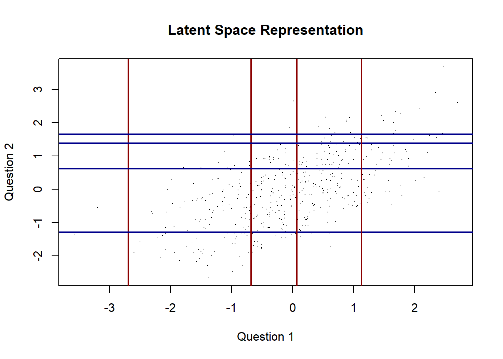
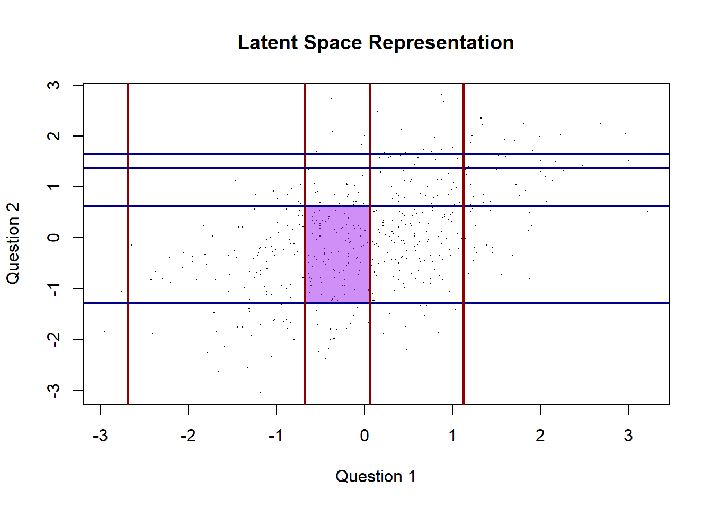
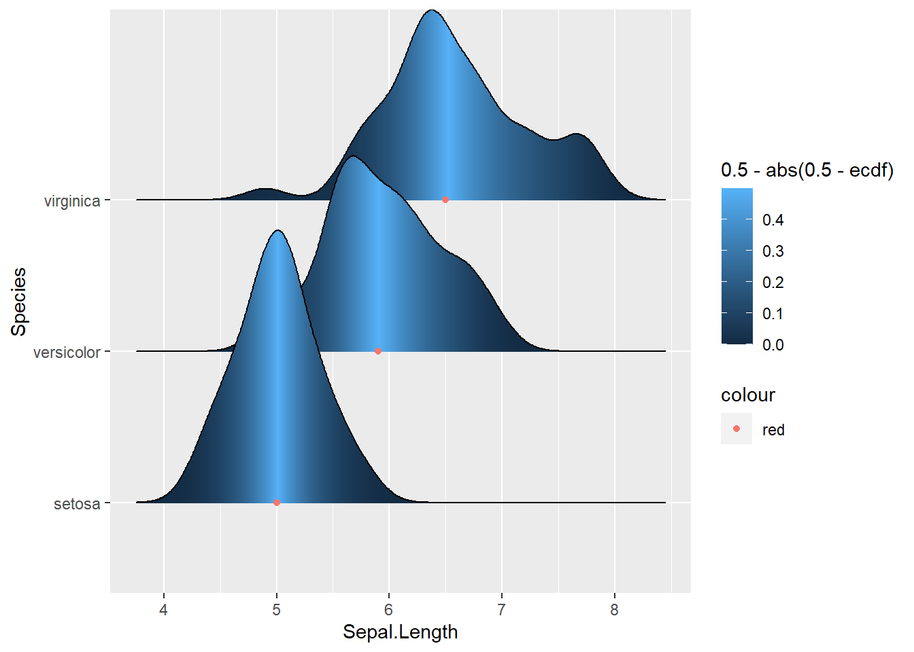

Polychoric Correlation with Likert data in R and Stan
Motivation: It’s likely likert
Look at you, you successful businessperson you! You own a company that sells two products: A and B. You run a short two question survey to determine whether your customers would recommend either products. For this example we’ll assume that all customers are using both products. The question style is the commonly used “Net Promoter Score” or likert scale format:
“Provide your level of agreement to the following question: I would recommend this product to a friend”
Where the available choices are:
- Strongly Disagree
- Somewhat Disagree
- Neither Agree or Disagree
- Somewhat Agree
- Strongly Agree
There are of course limitations to this kind of survey design. For one, most people have a hard time discretizing their feelings or emotions into a single bucket. Perhaps the more appropriate question response would feature a slider that allows respondents to freely select their agreement on a continuous scale. Regardless, as this is the design chosen by thousands of companies and organizations, we’ll choose it as well. Though, we’ll recognize that agreement or sentiment in general is better categorized as a spectrum.
Enough philosophy, now to the actual data. I’m going to show how the data is generated further down, but for now let’s say that we ran the survey and collected 1,000 responses. First, let’s start by loading in all the packages we’ll need for this analysis.
library(tidyverse)
library(cmdstanr)
library(knitr)
library(kableExtra)Next, we’ll take our discrete_data data frame which holds our survey responses and visualize it as a table of all unique responses. For example, the third row and second column will be the number of customers that responded 3 to question 1 and 2 to question 2.
table(discrete_data[,1], discrete_data[,2]) %>%
kbl(row.names=1) %>%
kable_styling() %>%
column_spec(column = 1, bold=T)| 1 | 2 | 3 | 4 | 5 | |
|---|---|---|---|---|---|
| 1 | 2 | 1 | 0 | 0 | 0 |
| 2 | 28 | 92 | 5 | 0 | 0 |
| 3 | 12 | 108 | 33 | 2 | 1 |
| 4 | 7 | 97 | 31 | 4 | 13 |
| 5 | 0 | 23 | 24 | 5 | 12 |
From the table above, we can already see that there is a high degree of positive correlation between the questions. If we wanted to quantifying this correlation, we might naively use the cor, but this produces biased results as our provided data is not continuous, which is assumed by the default Pearson correlation measure. There are other measures of correlation such as Spearman or Kendall which are non-parametric, but neither take into account the data generating process that aligns with our philosophy.
Data Generating Process
We assumed that our data was generated by customers that were forced to discretize their agreement with a given question. If we wanted to properly model this, we might want to assume that our data is first generated from some latent multivariate continuous distribution, and then discretized using a set of p - 1 “cut-points” for each dimension of the latent space, where p is the number of possible choices in the questionnaire. The code to generate data from this process is shown below:
sigma <- c(1,0.5,0.5,1) %>% matrix(.,nrow=2,byrow=T)
dat <- mvtnorm::rmvnorm(500, sigma=sigma)
c_points <- list(
c(-2.69, -0.68, 0.07, 1.13),
c(-1.29, 0.62, 1.38, 1.65)
)
discrete_data <- dat %>% apply(., 1,
\(x) c(
sum(x[1] > c_points[[1]]) + 1,
sum(x[2] > c_points[[2]]) + 1)
) %>% t()We use a bivariate gaussian as our latent distribution with a mean of 0 and variance, or equivalently in this case, a correlation matrix of
\[ \begin{bmatrix} 1 & 0.5\\ 0.5 & 1 \end{bmatrix} \] If we plot the latent variables with the cut-points we obtain:
plot(dat,pch='.', xlab = 'Question 1', ylab='Question 2', main='Latent Space Representation')
for (i in 1:length(c_points[[1]])){
abline(v=c_points[[1]][i], lwd=2, col='darkred')
abline(h=c_points[[2]][i], lwd=2, col='darkblue')
} So a respondent that answered 3 for the first question and 2 for the second question would have had their latent representation in the below region:

Modeling
Priors and Likelihood
Our model is almost fully specified with the data generating process outlined above, but we still need to incorporate our priors. For the correlation matrix, we will reparametrize using the Cholesky decomposition and use a LKJ prior. The cut-points are a little trickier, but notice that the marginals of our latent distribution are standard normals. We can use this to our advantage by reparametrizing the cut-points as a vector of probabilities where each entry is the probability allocated to the interval on the standard normal distribution between two adjacent cut-points \(c_i\) and \(c_j\). Note that for \(p-1\) cutpoints, there will be \(p\) entries in our probability vector. Thus, we can write:
\[ \begin{align} \begin{bmatrix} c_1\\ c_2 \\ \vdots\\ c_{p-1} \end{bmatrix} & \rightarrow \begin{bmatrix} \theta_1\\ \theta_2\\ \vdots\\ \theta_{p} \end{bmatrix} \\ \\ &= \begin{bmatrix} \Phi(c_1) \\ \Phi(c_2) - \Phi(c_1) ] \\ \vdots \\ 1 - \Phi(c_{p-1}) \end{bmatrix} \end{align} \] Since our probability interval vector must sum to one, we can use a dirichlet distribution as the prior. The stan code to specify this prior and perform the reparametrization is below:
real induced_dirichlet_lpdf(vector c, vector alpha, real gamma){
int K = num_elements(c) + 1;
vector[K - 1] cuml = Phi(c - gamma);
vector[K] p;
matrix[K,K] J = rep_matrix(0,K,K);
p[1] = cuml[1];
for (k in 2:(K-1)){
p[k] = cuml[k] - cuml[k-1];
}
p[K] = 1 - cuml[K-1];
for (k in 1:K) J[k,1] = 1;
for (k in 2:K){
real rho = exp(std_normal_lpdf(c[k-1] - gamma));
J[k,k] = -rho;
J[k - 1, k] = rho;
}
return dirichlet_lpdf(p | alpha) + log_determinant(J);
}The stan code is a bit more involved, and includes the Jacobian calculations since we are specifying a prior on the transformed parameters. For more detail about the reparametrization and Jacobian calculations I suggest reading Michael Betancourt’s ordinal regression tutorial. Be aware that his model uses a latent logistic distribution (different than our standard normal).
Finally, we need to consider the likelihood of the data, conditioned on our parameters. To model this, we will extend the multivariate probit model to the case where an arbitrary number of ordinal categories are observed. Without going into too much detail, the multivariate probit is used to model a bernoulli distributed random vector, where the data is assumed to have been generated from a latent multivariate normal distribution. For example, if you consider our data generating process above but instead only have one cut-point per dimension, then the data generated would be a bernoulli random vector. The stan code used to define this extenstion of the multivariate probit likelihood is here, along with the full stan code for the model.
The full derivation for the likelihood, and therefore stan code, is beyond the scope of this blog post, but I refer you to these two other resources to learn more if you are interested:
- Ben Goodrich’s Truncated Normal Sampler in STAN
- GHK Algorithm, which is what Ben’s implementation is based on
The parameter, model, and generated quantities block is shown below:
parameters {
cholesky_factor_corr[D] L_Omega;
array[N,D] real<lower=0, upper=1> u;
array[D] ordered[n_cut] c_points;
}
model {
L_Omega ~ lkj_corr_cholesky(4);
for (d in 1:D) target += induced_dirichlet_lpdf(c_points[d] | rep_vector(1, n_cut + 1), 0);
for (n in 1:N) target += trunc_norm(y[n], c_points, L_Omega, u[n], D, y_min, y_max);
}
generated quantities {
corr_matrix[D] Omega;
Omega = multiply_lower_tri_self_transpose(L_Omega);
}The parameters of interest here are L_Omega, which will give us the correlation matrix for our latent gaussian and the c_points array which determines the cut-points that generated our data. Ignore the u parameter, as it is a nuisance parameter and is only used to help define the likelihood of our data.
Sampling and Posterior Exploration
Now that are model is fully defined, we can used the cmdstanr package to sample our posterior. The full stan code can found here.
# fp <- file.path('PATH TO YOUR STAN MODEL CODE')
mod <- cmdstan_model(fp)
data <- list(
D = ncol(discrete_data),
N = nrow(discrete_data),
y = discrete_data,
y_min = min(discrete_data),
y_max = max(discrete_data)
)
# poly_cor <- mod$sample(data = data, seed = 1234, chains = 4, parallel_chains = 2,
# iter_warmup = 2000,iter_sampling = 2000)
# saveRDS(poly_cor, 'poly_cor.Rds')
poly_cor <- readRDS('poly_cor.Rds')Let’s take a look out some diagnotics to make sure we had adequate posterior sampling:
poly_cor$summary(c(paste0('c_points[1,', 1:4,']'), paste0('c_points[2,', 1:4,']'), 'Omega[2,1]')) %>%
map(., \(x) if(is.character(x)) x else round(x,3)) %>% as.data.frame() %>%
kbl() %>% kable_styling()| variable | mean | median | sd | mad | q5 | q95 | rhat | ess_bulk | ess_tail |
|---|---|---|---|---|---|---|---|---|---|
| c_points[1,1] | -2.758 | -2.735 | 0.256 | 0.249 | -3.213 | -2.381 | 1.001 | 4723.183 | 4710.277 |
| c_points[1,2] | -0.584 | -0.584 | 0.059 | 0.060 | -0.681 | -0.486 | 1.000 | 9277.448 | 7017.372 |
| c_points[1,3] | 0.075 | 0.075 | 0.056 | 0.055 | -0.017 | 0.168 | 1.001 | 8594.291 | 6811.219 |
| c_points[1,4] | 1.234 | 1.233 | 0.074 | 0.074 | 1.113 | 1.356 | 1.001 | 10692.970 | 6851.623 |
| c_points[2,1] | -1.269 | -1.267 | 0.076 | 0.075 | -1.396 | -1.145 | 1.000 | 6450.555 | 6192.258 |
| c_points[2,2] | 0.543 | 0.543 | 0.058 | 0.059 | 0.448 | 0.639 | 1.001 | 10000.920 | 6378.784 |
| c_points[2,3] | 1.411 | 1.410 | 0.081 | 0.080 | 1.279 | 1.546 | 1.000 | 10733.577 | 6705.187 |
| c_points[2,4] | 1.551 | 1.551 | 0.087 | 0.088 | 1.409 | 1.693 | 1.001 | 11349.102 | 6513.720 |
| Omega[2,1] | 0.514 | 0.515 | 0.041 | 0.041 | 0.446 | 0.579 | 1.000 | 7878.964 | 6320.697 |
Our Rhat, ess_bulk, and ess_tail look good! Let’s take a look at our posteriors for the c_points paramter:
d1 <- data.frame(n=paste0('c_points[2,', 4:1,']') %>% as.factor() %>% rev(), x0=c_points[[2]])
poly_cor$draws(paste0('c_points[2,', 4:1,']')) %>% bayesplot::mcmc_areas_ridges() +
geom_segment(data=d1, aes(x = x0, xend = x0, y = as.numeric(n),
yend = as.numeric(n)), color='red')
# a <- map(c(1,2,3,4), ~rnorm(1e4,mean=.x,sd=0.5)) %>% as.data.frame() %>%
# ggplot(, )
iris_med <- iris %>% group_by(Species) %>% summarise(Sepal.Length = median(Sepal.Length))
ggplot(iris, aes(x = Sepal.Length, y = Species, fill = 0.5 - abs(0.5-..ecdf..))) +
ggridges::stat_density_ridges(geom = "density_ridges_gradient", calc_ecdf = TRUE) +
geom_point(aes(x = Sepal.Length, y = Species, color = "red"), data = iris_med, inherit.aes = F)## Picking joint bandwidth of 0.181